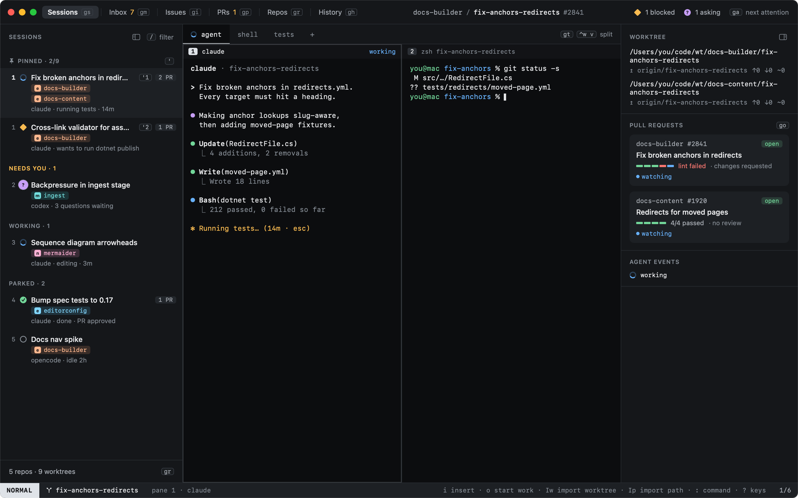
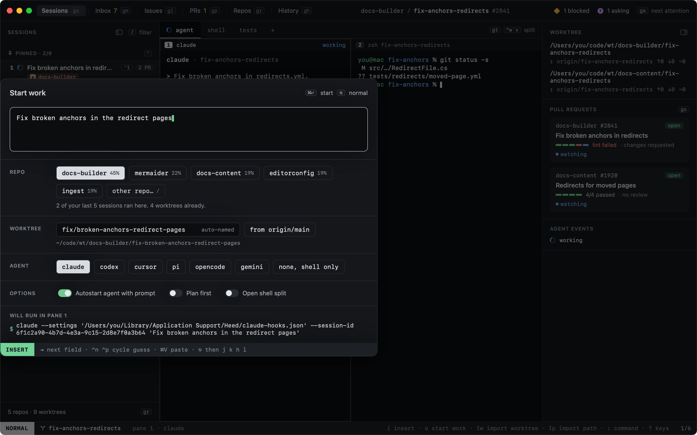
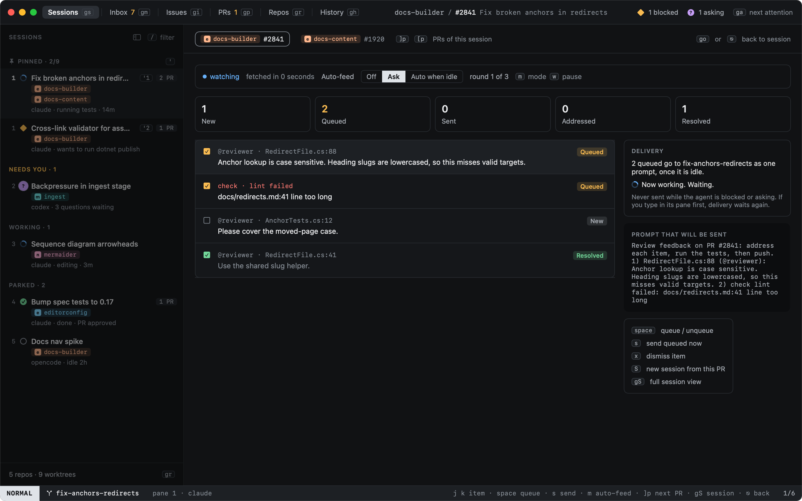
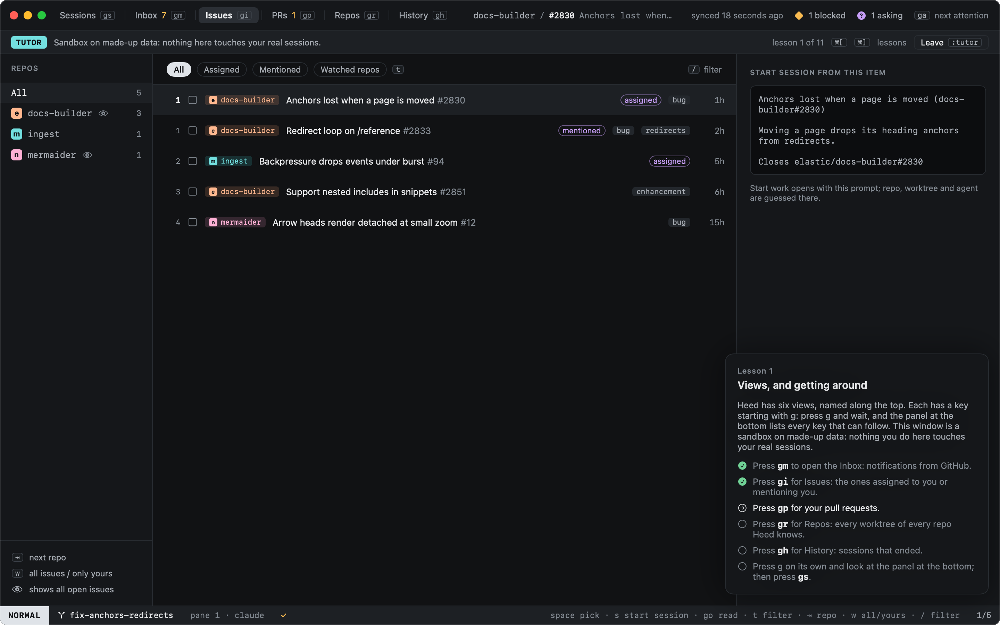

Keep an eye on every agent.
A keyboard-first macOS command center for agentic coding. Agents run in real terminals, every task gets its own git worktree, and the GitHub around the work stays in view. Heed tells you which agent needs you, and gets you there in a keystroke.

A session is an agent, its terminals and its worktree. Hooks tell Heed what each agent is doing, so the list sorts itself: the ones waiting on you rise to the top, the Dock and the menu bar show how many, and ga jumps to the next.
libghostty panes and tabs: the agent, a shell, your test runner.
claude, codex, cursor, pi, opencode and gemini, or your own command.
Sessions come back after a restart, the agent picking up where it stopped.
NORMAL drives Heed; INSERT sends your keys to the focused terminal. Hints jump to anything, / filters any list, and : runs any command by name. Every binding is yours to change.
Heed picks the repo, names the branch (fix/, chore/ from your first word), makes the
worktree and starts the agent on your prompt. ⌃⌥Space opens it over any app.

Your inbox, issues and pull requests, synced through the GitHub CLI. Start a session from an issue in one key. Review comments and failing checks queue up and go back to the agent when it is idle.

:tutor turns the window into a sandbox on made-up data, with lessons that tick off as you do them. Your real sessions keep running underneath.

Heed is open source and runs on macOS 15 or later.